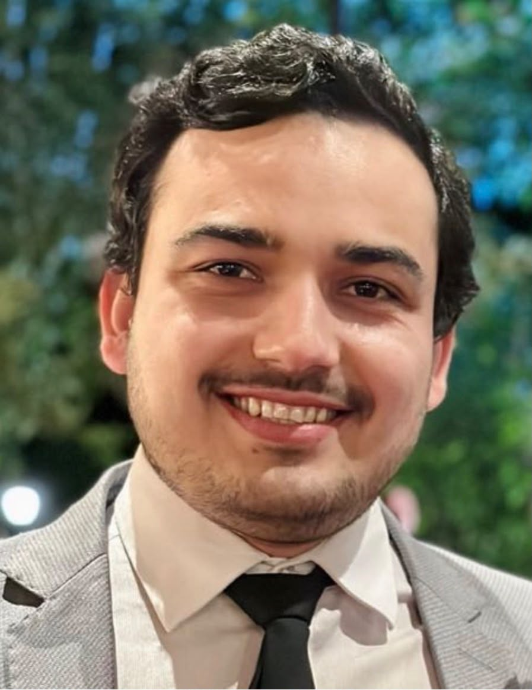
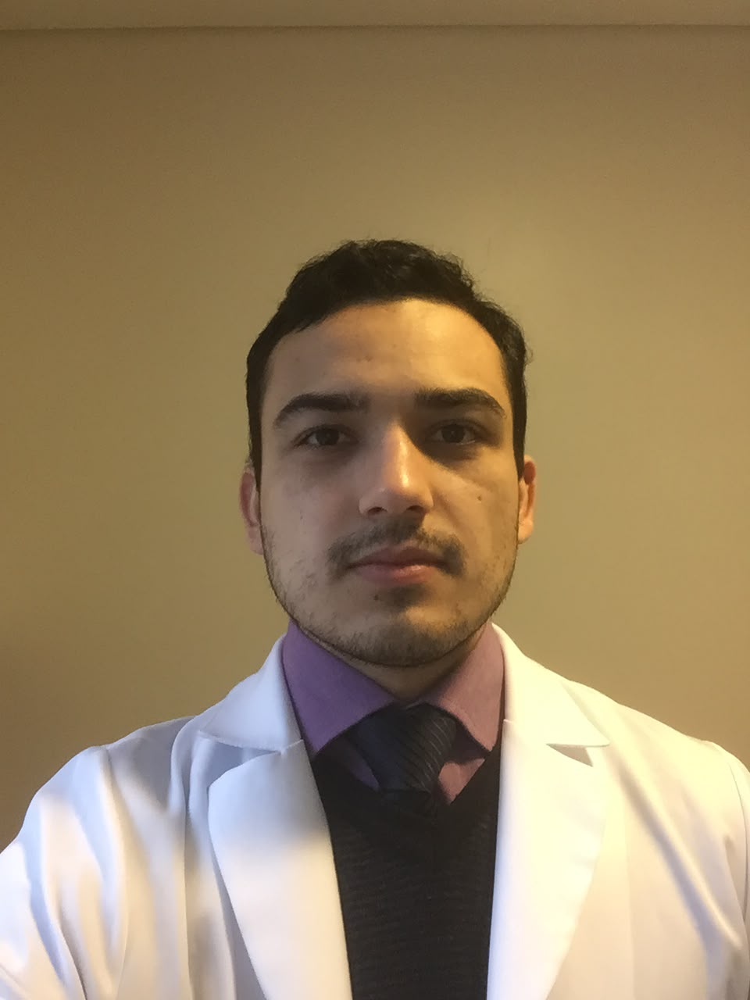
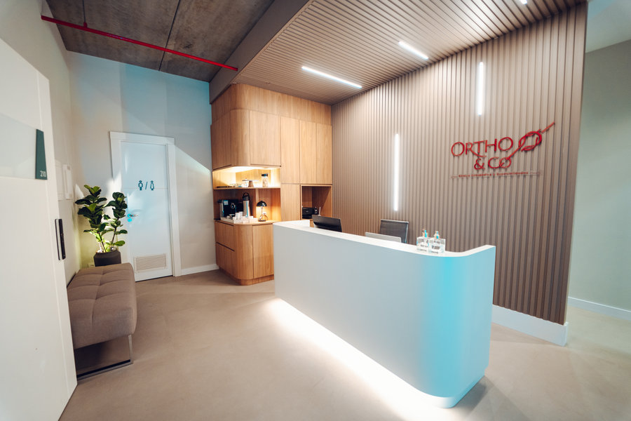
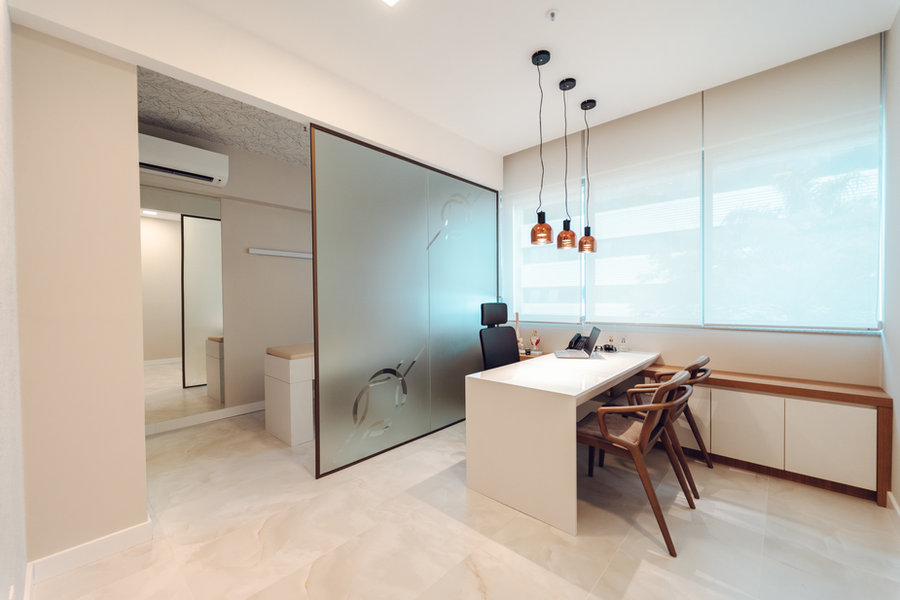
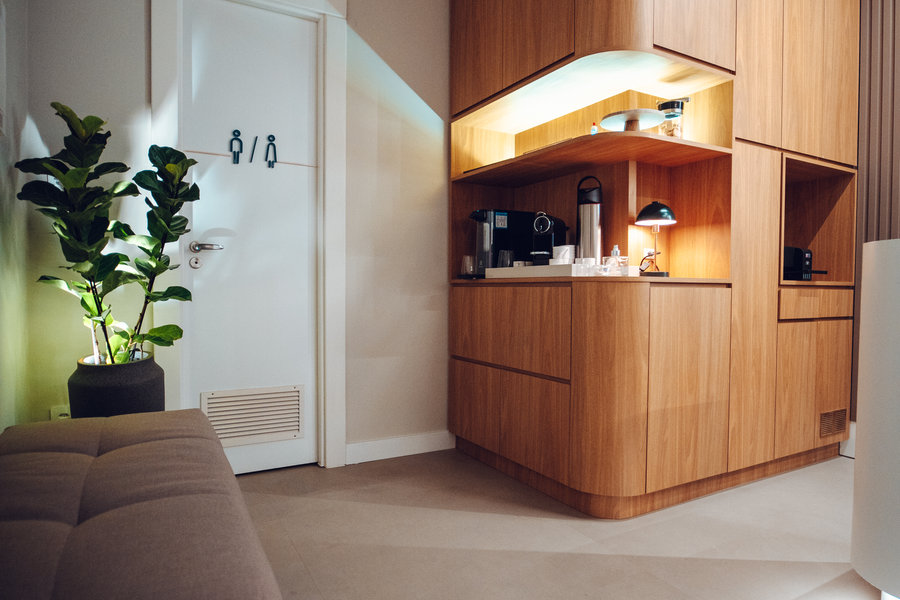
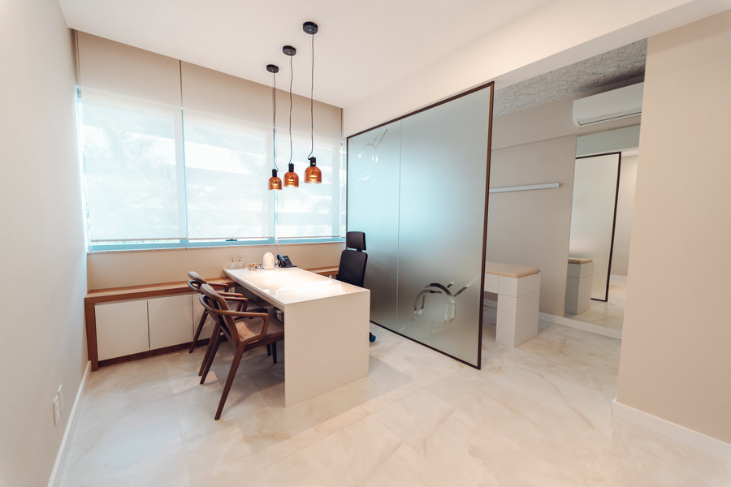

Cirurgião do quadril · Florianópolis
Cirurgia do quadril com foco no quadril do jovem: do adolescente ao adulto ativo.
Áreas de atuação
Impacto femoroacetabular, displasia e lesões do lábio, com foco em preservar a articulação.
Formação em ortopedia pediátrica: epifisiólise, Perthes e displasia do desenvolvimento.
Dor no quadril do atleta, artroscopia do quadril e retorno seguro ao esporte.
Quem é
Ortopedista e traumatologista formado pelo Hospital Regional de São José, com formação complementar em ortopedia pediátrica e cirurgia do quadril no Brasil, na França e na Austrália.
É preceptor da residência médica em ortopedia no Hospital Regional de São José e no Hospital Infantil Joana de Gusmão, e mestrando em Ciências Médicas na UFSC.

Formação
Lyon-Ortho-Clinic / Clinique de la Sauvegarde, com o Dr. Nicolas Bonin.
Prince of Wales Hospital, com o Dr. Michael Solomon.
Hospital Regional de São José, sob orientação do Prof. Dr. Daniel Fernandes.
Hospital Infantil Joana de Gusmão, sob orientação do Dr. Anastácio Kotzias Neto.
Pesquisa sobre a deformidade residual do quadril após a epifisiólise.
Universidade Federal de São Paulo.
Hospital Regional de São José.
Universidade do Vale do Itajaí (UNIVALI).
Treinamentos práticos em artroscopia e preservação do quadril em Lyon (França, 2024), Naples (EUA, 2019) e no Brasil (2024).
Displasia do quadril
Na displasia do quadril, o acetábulo (a "concha" da bacia) é raso e cobre pouco a cabeça do fêmur. A carga se concentra numa área pequena da cartilagem, o que causa dor e pode levar ao desgaste precoce da articulação.
A osteotomia periacetabular reposiciona o acetábulo para que ele passe a cobrir melhor a cabeça do fêmur, preservando o quadril do próprio paciente.
Condições tratadas
Contato anormal entre o fêmur e o acetábulo durante o movimento, causa frequente de dor no quadril do jovem ativo.
Acetábulo raso, que cobre pouco a cabeça do fêmur e sobrecarrega a cartilagem.
Lesão da borda de cartilagem do acetábulo, muitas vezes associada ao impacto ou à displasia.
Escorregamento da cabeça do fêmur na fase de crescimento, mais comum no adolescente.
Alteração da circulação da cabeça do fêmur na infância.
Lesões ligadas ao esporte, avaliadas com foco no retorno seguro à atividade.
Produção científica
Consultório



